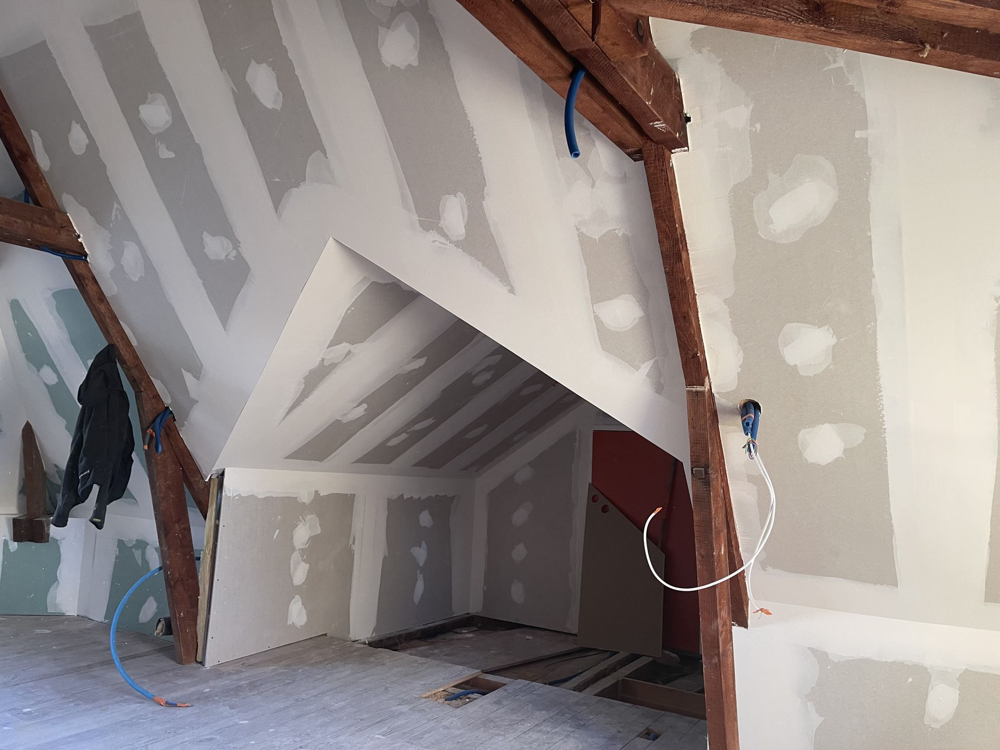

Rénovation
Travaux de rénovation intérieure pour redonner un aspect propre, moderne et fonctionnel à vos pièces.
Artisan plaquiste à Feings – Loir-et-Cher
Roullet Plaquiste vous accompagne pour vos travaux en maison neuve ou en rénovation à Feings et dans un rayon de 25 km. Travail soigné, devis gratuit et plus de 10 ans d’expérience.

Roullet Plaquiste intervient pour différents travaux de plâtrerie et d’isolation. Pour toute demande spécifique, le plus simple reste de prendre contact par téléphone ou par mail.
Travaux de rénovation intérieure pour redonner un aspect propre, moderne et fonctionnel à vos pièces.
Création et habillage de cloisons, doublages et aménagements intérieurs avec une finition soignée.
Travaux d’isolation intérieure pour améliorer le confort thermique et acoustique de votre habitation.
Pour en savoir davantage sur les possibilités d’intervention, contactez directement l’artisan pour votre projet.
Plus de 10 ans d’expérience dans les travaux de plâtrerie et de rénovation
Devis gratuit pour étudier votre besoin simplement
Travail soigné et attention portée aux finitions
Intervention locale à Feings et dans un rayon de 25 km
Découvrez un aperçu de chantiers réalisés pour montrer la qualité du travail effectué.


Contactez Roullet Plaquiste pour en discuter et obtenir un devis gratuit.